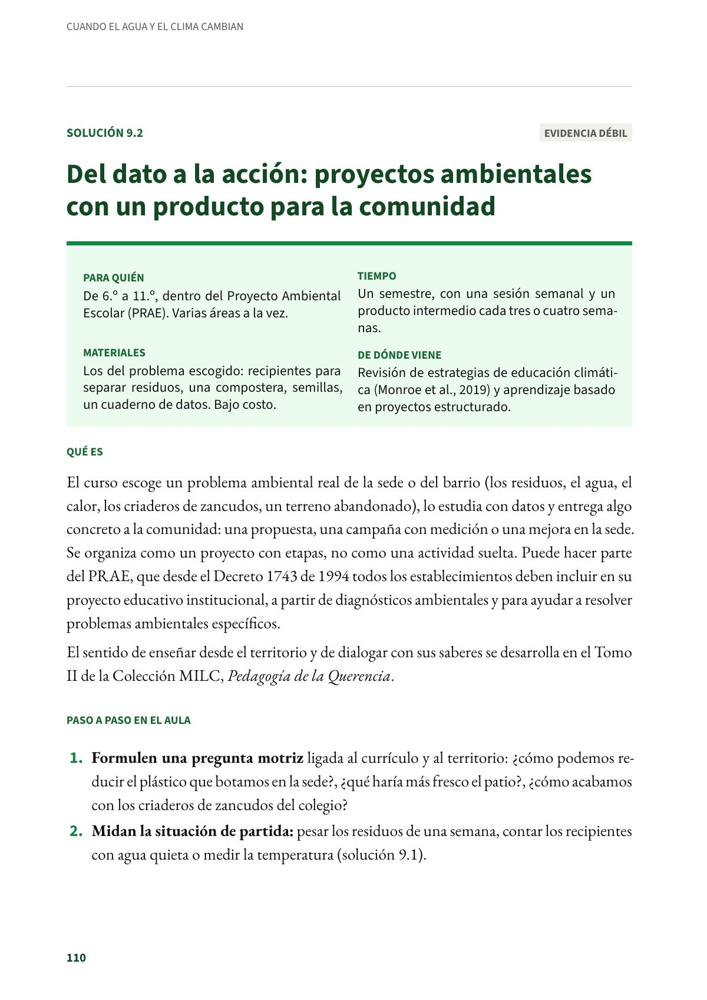
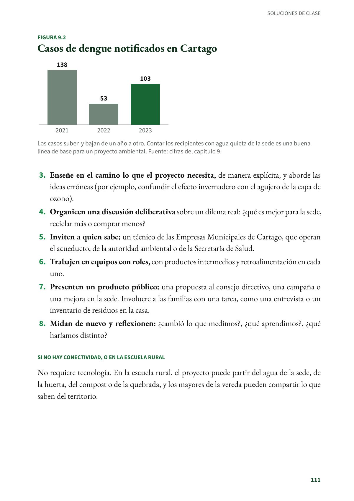
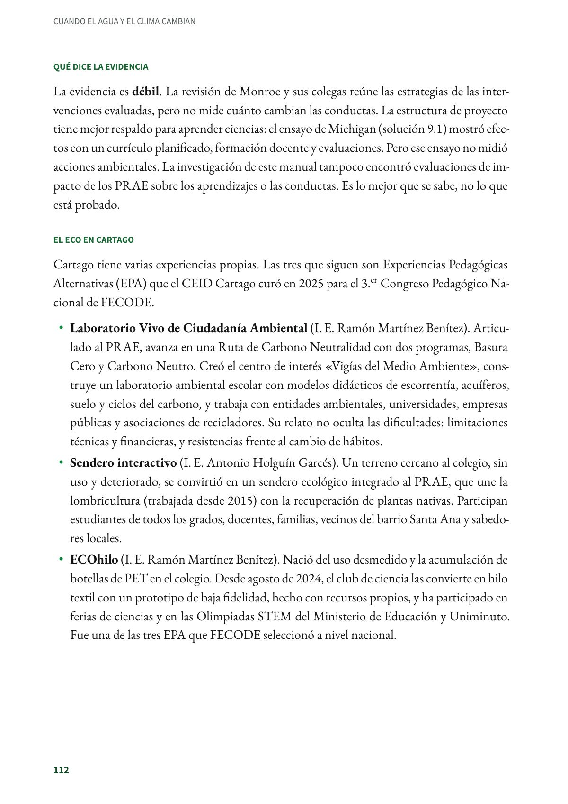
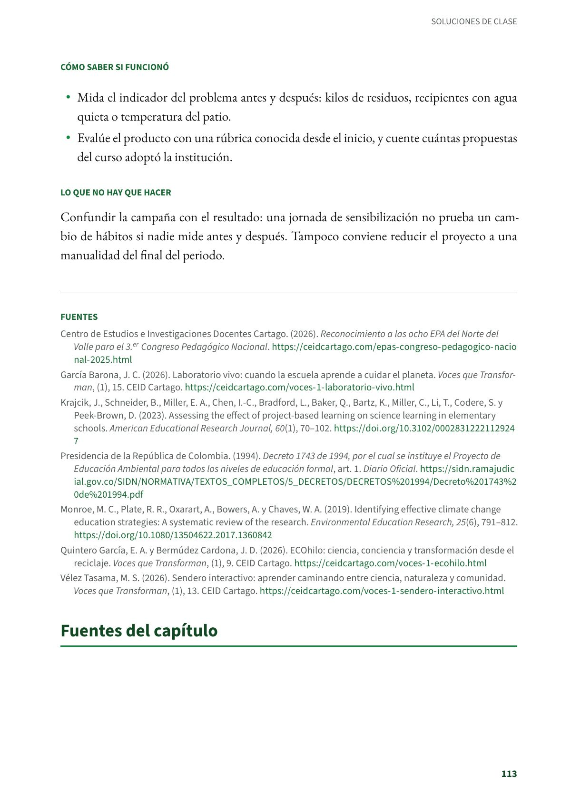

Del dato a la acción: proyectos ambientales con un producto para la comunidad
El curso escoge un problema ambiental real de la sede o del barrio (los residuos, el agua, el calor, los criaderos de zancudos, un terreno abandonado), lo estudia con datos y entrega algo concreto a la comunidad. De 6.º a 11.º, dentro del Proyecto Ambiental Escolar (PRAE). Evidencia débil.
PDF · 4 págs. · 85 KBEn resumen
- Evidencia: débil.
- Para quién: De 6.º a 11.º, dentro del Proyecto Ambiental Escolar (PRAE). Varias áreas a la vez.
- Tiempo: Un semestre, con una sesión semanal y un producto intermedio cada tres o cuatro semanas.
- Materiales: Los del problema escogido: recipientes para separar residuos, una compostera, semillas, un cuaderno de datos. Bajo costo.
- De dónde viene: Revisión de estrategias de educación climática (Monroe et al., 2019) y aprendizaje basado en proyectos estructurado.
Qué es
El curso escoge un problema ambiental real de la sede o del barrio (los residuos, el agua, el calor, los criaderos de zancudos, un terreno abandonado), lo estudia con datos y entrega algo concreto a la comunidad: una propuesta, una campaña con medición o una mejora en la sede. Se organiza como un proyecto con etapas, no como una actividad suelta. Puede hacer parte del PRAE, que desde el Decreto 1743 de 1994 todos los establecimientos deben incluir en su proyecto educativo institucional, a partir de diagnósticos ambientales y para ayudar a resolver problemas ambientales específicos.
El sentido de enseñar desde el territorio y de dialogar con sus saberes se desarrolla en el Tomo II de la Colección MILC, Pedagogía de la Querencia.
Paso a paso en el aula
- Formulen una pregunta motriz ligada al currículo y al territorio: ¿cómo podemos reducir el plástico que botamos en la sede?, ¿qué haría más fresco el patio?, ¿cómo acabamos con los criaderos de zancudos del colegio?
- Midan la situación de partida: pesar los residuos de una semana, contar los recipientes con agua quieta o medir la temperatura (solución 9.1).
- Enseñe en el camino lo que el proyecto necesita, de manera explícita, y aborde las ideas erróneas (por ejemplo, confundir el efecto invernadero con el agujero de la capa de ozono).
- Organicen una discusión deliberativa sobre un dilema real: ¿qué es mejor para la sede, reciclar más o comprar menos?
- Inviten a quien sabe: un técnico de las Empresas Municipales de Cartago, que operan el acueducto, de la autoridad ambiental o de la Secretaría de Salud.
- Trabajen en equipos con roles, con productos intermedios y retroalimentación en cada uno.
- Presenten un producto público: una propuesta al consejo directivo, una campaña o una mejora en la sede. Involucre a las familias con una tarea, como una entrevista o un inventario de residuos en la casa.
- Midan de nuevo y reflexionen: ¿cambió lo que medimos?, ¿qué aprendimos?, ¿qué haríamos distinto?
Si no hay conectividad, o en la escuela rural
No requiere tecnología. En la escuela rural, el proyecto puede partir del agua de la sede, de la huerta, del compost o de la quebrada, y los mayores de la vereda pueden compartir lo que saben del territorio.
Qué dice la evidencia
La evidencia es débil. La revisión de Monroe y sus colegas reúne las estrategias de las intervenciones evaluadas, pero no mide cuánto cambian las conductas. La estructura de proyecto tiene mejor respaldo para aprender ciencias: el ensayo de Michigan (solución 9.1) mostró efectos con un currículo planificado, formación docente y evaluaciones. Pero ese ensayo no midió acciones ambientales. La investigación de este manual tampoco encontró evaluaciones de impacto de los PRAE sobre los aprendizajes o las conductas. Es lo mejor que se sabe, no lo que está probado.
El eco en Cartago
Cartago tiene varias experiencias propias. Las tres que siguen son Experiencias Pedagógicas Alternativas (EPA) que el CEID Cartago curó en 2025 para el 3.er Congreso Pedagógico Nacional de FECODE.
- Laboratorio Vivo de Ciudadanía Ambiental (I. E. Ramón Martínez Benítez). Articulado al PRAE, avanza en una Ruta de Carbono Neutralidad con dos programas, Basura Cero y Carbono Neutro. Creó el centro de interés «Vigías del Medio Ambiente», construye un laboratorio ambiental escolar con modelos didácticos de escorrentía, acuíferos, suelo y ciclos del carbono, y trabaja con entidades ambientales, universidades, empresas públicas y asociaciones de recicladores. Su relato no oculta las dificultades: limitaciones técnicas y financieras, y resistencias frente al cambio de hábitos.
- Sendero interactivo (I. E. Antonio Holguín Garcés). Un terreno cercano al colegio, sin uso y deteriorado, se convirtió en un sendero ecológico integrado al PRAE, que une la lombricultura (trabajada desde 2015) con la recuperación de plantas nativas. Participan estudiantes de todos los grados, docentes, familias, vecinos del barrio Santa Ana y sabedores locales.
- ECOhilo (I. E. Ramón Martínez Benítez). Nació del uso desmedido y la acumulación de botellas de PET en el colegio. Desde agosto de 2024, el club de ciencia las convierte en hilo textil con un prototipo de baja fidelidad, hecho con recursos propios, y ha participado en ferias de ciencias y en las Olimpiadas STEM del Ministerio de Educación y Uniminuto. Fue una de las tres EPA que FECODE seleccionó a nivel nacional.
Cómo saber si funcionó
- Mida el indicador del problema antes y después: kilos de residuos, recipientes con agua quieta o temperatura del patio.
- Evalúe el producto con una rúbrica conocida desde el inicio, y cuente cuántas propuestas del curso adoptó la institución.
Lo que no hay que hacer
Confundir la campaña con el resultado: una jornada de sensibilización no prueba un cambio de hábitos si nadie mide antes y después. Tampoco conviene reducir el proyecto a una manualidad del final del periodo.
Fuentes
Centro de Estudios e Investigaciones Docentes Cartago. (2026). Reconocimiento a las ocho EPA del Norte del Valle para el 3.er Congreso Pedagógico Nacional. ceidcartago.com
García Barona, J. C. (2026). Laboratorio vivo: cuando la escuela aprende a cuidar el planeta. Voces que Transforman, (1), 15. CEID Cartago. ceidcartago.com
Krajcik, J., Schneider, B., Miller, E. A., Chen, I.-C., Bradford, L., Baker, Q., Bartz, K., Miller, C., Li, T., Codere, S. y Peek-Brown, D. (2023). Assessing the effect of project-based learning on science learning in elementary schools. American Educational Research Journal, 60(1), 70–102. doi.org
Presidencia de la República de Colombia. (1994). Decreto 1743 de 1994, por el cual se instituye el Proyecto de Educación Ambiental para todos los niveles de educación formal, art. 1. Diario Oficial. sidn.ramajudicial.gov.co
Monroe, M. C., Plate, R. R., Oxarart, A., Bowers, A. y Chaves, W. A. (2019). Identifying effective climate change education strategies: A systematic review of the research. Environmental Education Research, 25(6), 791–812. doi.org
Quintero García, E. A. y Bermúdez Cardona, J. D. (2026). ECOhilo: ciencia, conciencia y transformación desde el reciclaje. Voces que Transforman, (1), 9. CEID Cartago. ceidcartago.com
Vélez Tasama, M. S. (2026). Sendero interactivo: aprender caminando entre ciencia, naturaleza y comunidad. Voces que Transforman, (1), 13. CEID Cartago. ceidcartago.com
Así se ve en el libro
4 páginas


